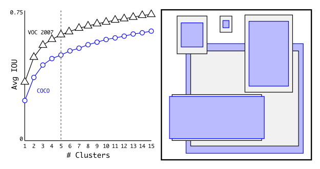
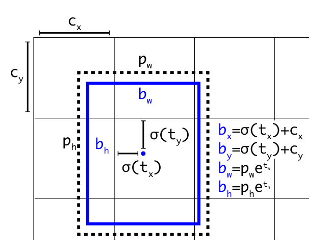
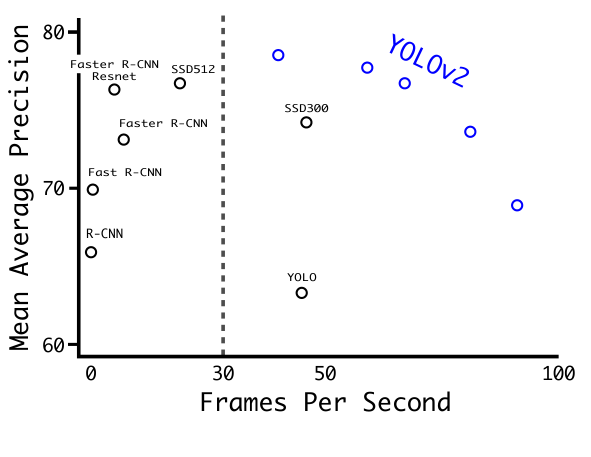
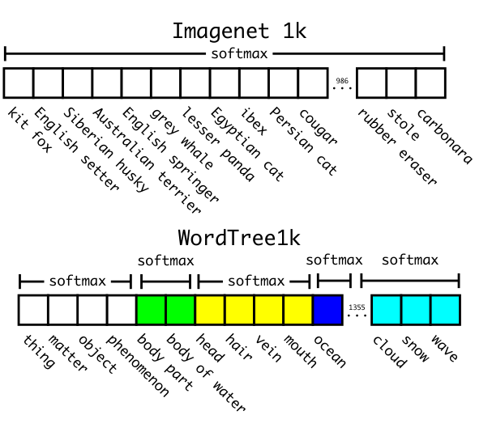
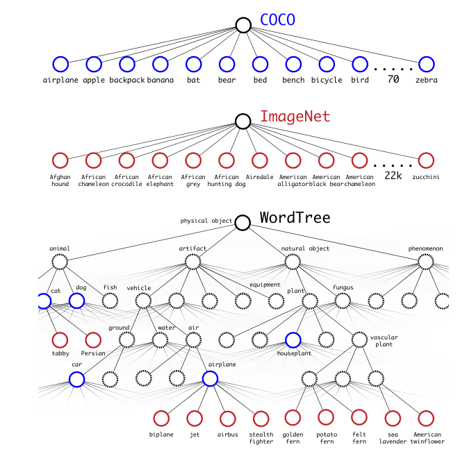

YOLO9000: 더 정확하고, 더 빠르며, 더 많은 클래스를 탐지하는 모델
YOLO9000: Better, Faster, Stronger
본 논문은 기존 YOLO 탐지기를 전면 개선하여 정확도와 속도를 모두 끌어올린 YOLOv2와, 객체 탐지 데이터셋(COCO)과 이미지 분류 데이터셋(ImageNet)을 결합해 9,000개 이상의 객체 클래스를 실시간으로 탐지하는 YOLO9000을 제안합니다.
- 더 정확하게 (Better): 배치 정규화(Batch Normalization), 고해상도 분류기 파인튜닝($448 \times 448$), 완전 합성곱 구조 및 앵커 박스(Anchor Box) 도입, k-평균 클러스터링 기반 차원 사전 정보(Dimension Priors), 직접적인 위치 예측(Direct Location Prediction), 패스스루(Passthrough) 계층을 통한 미세 특징 결합, 다중 스케일 학습(Multi-Scale Training)을 통해 PASCAL VOC 2007에서 67 FPS 기준 76.8 mAP, 40 FPS 기준 78.6 mAP를 달성했습니다.
- 더 빠르게 (Faster): 연산량이 많은 VGG-16(30.69B FLOPs)과 기존 YOLO의 커스텀 네트워크(8.52B FLOPs) 대신 자체 설계한 경량 백본 네트워크 Darknet-19(5.58B FLOPs, 19개 합성곱 계층 + 5개 맥스 풀링 계층)를 도입하여 ImageNet Top-5 정확도 91.2%($448 \times 448$ 파인튜닝 시 93.3%)와 빠른 추론 속도를 동시에 확보했습니다.
- 더 강력하게 (Stronger): WordNet 개념 그래프를 계층 트리로 구성한 WordTree를 통해 상호 배타적이지 않은 클래스 체계(예: COCO의 '개'와 ImageNet의 '노퍽 테리어')를 하나로 통합하고, 탐지 데이터와 분류 데이터를 함께 학습하는 공동 학습(Joint Training) 알고리즘을 제안했습니다. 이를 통해 9,418개 클래스의 실시간 탐지를 구현했으며, 별도의 라벨링된 탐지 데이터가 없는 156개 ImageNet 탐지 클래스에 대해서도 16.0 mAP(전체 200개 클래스 기준 19.7 mAP)를 기록했습니다.
초록 (Abstract)
본 논문에서는 9,000개 이상의 객체 카테고리(object category)를 탐지할 수 있는 최첨단 실시간 객체 탐지 시스템인 YOLO9000을 소개한다. 먼저 기존 연구에서 착안한 기법들과 새로운 아이디어를 결합하여 YOLO 탐지 방식을 다방면으로 개선하였다. 개선된 모델인 YOLOv2는 PASCAL VOC 및 COCO와 같은 표준 객체 탐지 벤치마크에서 최첨단(state-of-the-art) 성능을 달성하였다. 새로운 다중 스케일 학습(multi-scale training) 기법을 적용하면 동일한 YOLOv2 모델이 다양한 입력 크기로 동작할 수 있어 속도와 정확도 사이의 트레이드오프를 손쉽게 조절할 수 있다. VOC 2007에서 YOLOv2는 67 FPS의 속도로 76.8 mAP를 기록하고, 40 FPS에서는 78.6 mAP를 달성하여 ResNet 기반 Faster R-CNN이나 SSD와 같은 최신 기법들을 능가하면서도 훨씬 빠르게 동작한다.
마지막으로 객체 탐지(object detection)와 이미지 분류(classification)를 공동으로 학습(joint training)하는 방법을 제안한다. 이 기법을 사용하여 COCO 탐지 데이터셋과 ImageNet 분류 데이터셋으로 YOLO9000을 동시에 학습시켰다. 이러한 공동 학습을 통해 YOLO9000은 라벨링된 탐지 데이터가 없는 객체 클래스에 대해서도 탐지 결과를 예측할 수 있다. ImageNet 탐지 과제에서 검증한 결과, YOLO9000은 전체 200개 클래스 중 44개 클래스에 대해서만 탐지 데이터를 보유하고 있음에도 검증 세트(validation set)에서 19.7 mAP를 달성하였다. COCO에 포함되지 않은 나머지 156개 클래스에 대해서도 16.0 mAP를 기록하였다. 그러나 YOLO9000은 단지 200개 클래스만을 탐지하는 데 그치지 않고, 9,000개 이상의 서로 다른 객체 카테고리를 실시간으로 탐지할 수 있다.
1. 서론 (Introduction)
범용 객체 탐지 시스템은 빠르고 정확해야 하며, 매우 다양한 종류의 객체를 인식할 수 있어야 한다. 신경망의 도입 이후 객체 탐지 프레임워크는 점점 더 빠르고 정확해졌지만, 대부분의 탐지 모델은 여전히 제한된 수의 객체 집합에만 국한되어 있다.
현재의 객체 탐지 데이터셋은 이미지 분류(classification)나 태깅(tagging) 데이터셋에 비해 규모가 제한적이다. 가장 널리 쓰이는 탐지 데이터셋은 수천에서 수십만 장의 이미지와 수십에서 수백 개 수준의 태그만을 포함한다. 반면 분류 데이터셋은 수백만 장의 이미지와 수만에서 수십만 개의 카테고리를 보유하고 있다.

객체 탐지의 규모를 객체 분류 수준까지 확장하고자 하나, 탐지 작업을 위한 이미지 라벨링은 분류나 태깅을 위한 라벨링보다 비용이 훨씬 많이 든다(태그는 사용자가 무료로 제공하는 경우가 많다). 따라서 가까운 미래에 분류 데이터셋과 동등한 규모의 탐지 데이터셋이 구축되기를 기대하기는 어렵다.
이에 본 논문에서는 이미 보유하고 있는 방대한 양의 분류 데이터를 활용하여 현재 탐지 시스템의 인식 범위를 확장하는 새로운 방법을 제안한다. 이 접근법은 객체 분류에 대한 계층적(hierarchical) 관점을 채택하여 서로 다른 데이터셋들을 하나로 결합할 수 있게 한다.
또한 탐지 데이터와 분류 데이터를 모두 사용하여 객체 탐지기를 학습시킬 수 있는 공동 학습(joint training) 알고리즘을 제안한다. 이 방법은 라벨이 달린 탐지 이미지를 통해 객체의 위치를 정밀하게 파악(localize)하는 방법을 학습하는 동시에, 분류 이미지를 활용하여 인식 가능한 어휘(vocabulary)와 강건성(robustness)을 확장한다.
이 기법을 통해 9,000개 이상의 서로 다른 객체 카테고리를 탐지할 수 있는 실시간 객체 탐지기인 YOLO9000을 학습시켰다. 먼저 기존 YOLO 탐지 시스템을 개선하여 최첨단 실시간 탐지기인 YOLOv2를 구축하고, 이어서 제안한 데이터셋 결합 기법과 공동 학습 알고리즘을 적용하여 COCO 탐지 데이터와 ImageNet의 9,000개 이상의 클래스로 모델을 학습시켰다. 모든 코드와 사전 학습 모델은 온라인(http://pjreddie.com/yolo9000/)에 공개되어 있다.
2. 더 나은 성능 (Better)
기존 YOLO는 최신 탐지 시스템들과 비교했을 때 몇 가지 단점을 가지고 있다. Fast R-CNN과 비교한 오류 분석(error analysis) 결과에 따르면, YOLO는 상당수의 위치 추정 오류(localization error)를 발생시킨다. 또한 영역 제안 기반(region proposal-based) 기법들에 비해 재현율(recall)이 상대적으로 낮다. 따라서 분류 정확도를 유지하면서도 재현율과 위치 추정 성능을 개선하는 데 주력하였다.
컴퓨터 비전 분야는 일반적으로 더 크고 깊은 네트워크를 지향하는 추세이다. 더 높은 성능은 종종 더 큰 네트워크를 학습시키거나 여러 모델을 앙상블(ensemble)하는 데 의존한다. 그러나 YOLOv2에서는 여전히 빠른 속도를 유지하면서 더 정확한 탐지기를 구현하고자 한다. 네트워크의 규모를 키우는 대신 네트워크를 단순화하고 표현(representation)을 학습하기 쉽게 만드는 방식을 택하였다. 기존 연구의 다양한 아이디어와 새롭게 제안한 개념을 결합해 YOLO의 성능을 끌어올렸으며, 그 요약 결과는 표 2에 제시되어 있다.
배치 정규화 (Batch Normalization)
배치 정규화(Batch Normalization)는 다른 형태의 정규화(regularization) 기법을 사용할 필요성을 없애면서도 수렴(convergence)을 크게 개선한다. YOLO의 모든 합성곱 계층(convolutional layer)에 배치 정규화를 추가함으로써 mAP가 2% 이상 향상되었다. 또한 배치 정규화는 모델의 정규화에도 도움을 주므로, 드롭아웃(dropout)을 제거하더라도 과적합(overfitting) 없이 학습할 수 있다.
고해상도 분류기 (High Resolution Classifier)
모든 최신 탐지 기법들은 ImageNet으로 사전 학습(pre-trained)된 분류기를 사용한다. AlexNet 이후 대부분의 분류기는 $256 \times 256$보다 작은 입력 이미지에서 동작한다. 기존 YOLO 역시 분류기 네트워크를 $224 \times 224$ 해상도에서 학습시킨 뒤 탐지 학습 시 해상도를 448로 키웠다. 이는 네트워크가 객체 탐지를 학습하는 동시에 새로운 입력 해상도에도 적응해야 함을 의미한다.
YOLOv2에서는 먼저 ImageNet에서 전체 $448 \times 448$ 해상도로 분류 네트워크를 10 에포크(epoch) 동안 파인튜닝(fine-tuning)한다. 이를 통해 네트워크의 필터들이 고해상도 입력에서 더 잘 작동하도록 적응할 시간을 갖게 된다. 그 후 이렇게 조정된 네트워크를 탐지 작업에 맞게 파인튜닝한다. 이러한 고해상도 분류 네트워크 덕분에 mAP가 거의 4% 상승하였다.
앵커 박스를 적용한 합성곱 구조 (Convolutional With Anchor Boxes)
기존 YOLO는 합성곱 특징 추출기(convolutional feature extractor) 위에 완전 연결 계층(fully connected layer)을 두어 바운딩 박스 좌표를 직접 예측하였다. 반면 Faster R-CNN은 좌표를 직접 예측하는 대신 수작업으로 정한 사전 박스(hand-picked priors)를 이용해 바운딩 박스를 예측한다. Faster R-CNN의 영역 제안 네트워크(RPN, Region Proposal Network)는 오직 합성곱 계층만을 사용하여 앵커 박스(anchor box)에 대한 오프셋(offset)과 신뢰도(confidence)를 예측한다. 예측 계층이 합성곱 형태이므로 RPN은 특징 맵(feature map)의 모든 위치에서 이러한 오프셋을 예측한다. 좌표 자체 대신 오프셋을 예측하면 문제가 단순화되어 네트워크가 더 쉽게 학습할 수 있다.
YOLO에서 완전 연결 계층을 제거하고 앵커 박스를 사용하여 바운딩 박스를 예측하도록 변경하였다. 먼저 풀링 계층(pooling layer) 하나를 제거하여 네트워크의 합성곱 계층 출력 해상도를 높였다. 또한 입력 이미지 크기를 $448 \times 448$ 대신 416으로 줄였다. 이는 출력 특징 맵의 공간 위치 개수가 홀수가 되어 단일 중심 셀(single center cell)이 존재하도록 하기 위함이다. 객체, 특히 큰 객체들은 이미지의 중앙을 차지하는 경향이 있으므로, 중앙 주변의 4개 위치가 아니라 정중앙의 단일 위치에서 이러한 객체를 예측하는 것이 유리하다. YOLO의 합성곱 계층은 이미지를 32배 다운샘플링하므로, 416 크기의 입력 이미지를 사용하면 $13 \times 13$ 크기의 출력 특징 맵을 얻게 된다.
앵커 박스를 도입하면서 클래스 예측 메커니즘을 공간 위치(spatial location)로부터 분리(decouple)하여, 모든 앵커 박스마다 클래스와 객체 존재 여부(objectness)를 각각 예측하도록 수정하였다. 기존 YOLO와 마찬가지로, 객체 존재 여부 예측은 정답(ground truth) 박스와 제안된 박스 간의 IOU(Intersection over Union)를 예측하며, 클래스 예측은 객체가 존재한다는 조건 하에서의 해당 클래스 조건부 확률을 예측한다.
앵커 박스를 사용하면 정확도는 소폭 감소한다. 기존 YOLO는 이미지당 98개의 박스만 예측했지만, 앵커 박스를 적용한 모델은 1,000개 이상의 박스를 예측한다. 앵커 박스를 적용하지 않은 중간 모델은 69.5 mAP와 81%의 재현율을 기록했으나, 앵커 박스를 적용한 모델은 69.2 mAP에 88%의 재현율을 보인다. mAP가 소폭 감소하기는 했으나 재현율이 상승했다는 것은 모델이 개선될 여지가 더 많다는 것을 의미한다.
차원 클러스터 (Dimension Clusters)
YOLO에 앵커 박스를 적용할 때 두 가지 문제에 직면하게 된다. 첫 번째 문제는 박스 크기(dimension)를 수작업으로 정해야 한다는 점이다. 물론 네트워크가 박스를 적절하게 조정하도록 학습할 수 있지만, 애초에 더 나은 사전 박스(prior)로 시작한다면 네트워크가 좋은 탐지 결과를 예측하도록 학습하는 과정을 더 쉽게 만들 수 있다.

사전 박스를 수동으로 고르는 대신, 학습 데이터셋의 바운딩 박스들에 대해 k-평균 클러스터링(k-means clustering)을 수행하여 자동으로 좋은 사전 박스를 찾는다. 표준 k-평균에서 유클리드 거리(Euclidean distance)를 사용하면, 큰 박스가 작은 박스보다 더 큰 오차를 발생시킨다. 그러나 실제로 원하는 것은 박스의 크기와 무관하게 높은 IOU 점수를 이끌어내는 사전 박스이다. 따라서 거리 척도(distance metric)로 다음 수식을 사용한다.
$$ d(\text{box}, \text{centroid}) = 1 - \text{IOU}(\text{box}, \text{centroid}) $$다양한 $k$ 값에 대해 k-평균 클러스터링을 실행하고 가장 가까운 중심점(centroid)과의 평균 IOU를 그래프로 그린 결과가 그림 2이다. 모델의 복잡도와 높은 재현율 사이의 균형점(tradeoff)으로 $k = 5$를 선택하였다. 클러스터 중심점들은 수작업으로 고른 앵커 박스와 뚜렷한 차이를 보인다. 낮고 넓은 박스는 적고, 높이가 길고 폭이 좁은 박스가 더 많다.
표 1은 제안한 클러스터링 전략과 수작업으로 고른 앵커 박스에 대해, 각 객체 박스와 가장 가까운 사전 박스 간의 평균 IOU를 비교한 결과이다. 단 5개의 사전 박스만 사용했을 때에도 클러스터 중심점은 평균 IOU 61.0을 기록하여 9개의 앵커 박스(60.9)와 비슷한 성능을 낸다. 9개의 중심점을 사용하면 훨씬 더 높은 평균 IOU(67.2)를 얻는다. 이는 k-평균을 이용해 바운딩 박스 사전 정보를 생성하면 모델이 더 나은 표현에서 출발하여 과제를 더 쉽게 학습할 수 있음을 시사한다.
| 박스 생성 방식 (Box Generation) | 개수 (#) | 평균 IOU (Avg IOU) |
|---|---|---|
| Cluster SSE | 5 | 58.7 |
| Cluster IOU | 5 | 61.0 |
| Anchor Boxes [15] | 9 | 60.9 |
| Cluster IOU | 9 | 67.2 |
직접적인 위치 예측 (Direct Location Prediction)
YOLO에서 앵커 박스를 사용할 때 마주치는 두 번째 문제는 특히 학습 초기 반복(iteration) 단계에서 나타나는 모델의 불안정성이다. 이러한 불안정성의 대부분은 박스의 $(x, y)$ 중심 좌표를 예측하는 방식에서 비롯된다. 영역 제안 네트워크(RPN)에서는 네트워크가 $t_x$와 $t_y$ 값을 예측하고 중심 좌표 $(x, y)$를 다음과 같이 계산한다.
$$ \begin{aligned} x &= (t_x \cdot w_a) - x_a \\ y &= (t_y \cdot h_a) - y_a \end{aligned} $$예를 들어 $t_x = 1$로 예측하면 박스는 앵커 박스의 너비($w_a$)만큼 오른쪽으로 이동하고, $t_x = -1$로 예측하면 같은 양만큼 왼쪽으로 이동한다. 이 수식에는 제약 조건이 없기 때문에 어떤 위치에서 예측한 박스인지와 무관하게 앵커 박스가 이미지 내의 어느 지점으로든 이동할 수 있다. 무작위 초기화(random initialization) 상태에서 모델이 합리적인 오프셋을 예측하도록 안정화되는 데는 오랜 시간이 걸린다.
이러한 오프셋 예측 방식 대신 기존 YOLO의 접근법을 따라 그리드 셀(grid cell)의 위치에 상대적인 위치 좌표를 예측한다. 이를 통해 정답(ground truth) 좌표가 0과 1 사이에 놓이도록 제한할 수 있으며, 로지스틱 활성화 함수(sigmoid, $\sigma$)를 사용하여 네트워크의 예측값 역시 이 범위 내에 머물도록 제약한다.
네트워크는 출력 특징 맵의 각 셀마다 5개의 바운딩 박스를 예측한다. 각 바운딩 박스마다 $t_x, t_y, t_w, t_h, t_o$의 5가지 좌표를 예측한다. 해당 셀이 이미지의 좌상단 모서리로부터 $(c_x, c_y)$만큼 떨어져 있고, 사전 박스(prior)의 너비와 높이가 각각 $p_w, p_h$라면 예측값은 다음과 같이 계산된다.
$$ \begin{aligned} b_x &= \sigma(t_x) + c_x \\ b_y &= \sigma(t_y) + c_y \\ b_w &= p_w e^{t_w} \\ b_h &= p_h e^{t_h} \\ \Pr(\text{object}) \cdot \text{IOU}(b, \text{object}) &= \sigma(t_o) \end{aligned} $$
위치 예측을 제약함으로써 매개변수화(parametrization)가 더 학습하기 쉬워지고 네트워크도 더 안정화된다. 차원 클러스터와 바운딩 박스 중심 위치의 직접 예측을 함께 사용하면, 앵커 박스를 적용한 버전에 비해 YOLO의 성능이 거의 5% 향상된다.
미세 특징 (Fine-Grained Features)
이렇게 수정된 YOLO는 $13 \times 13$ 크기의 특징 맵에서 탐지를 수행한다. 이는 큰 객체에는 충분하지만, 작은 객체의 위치를 정밀하게 찾는 데에는 더 세밀한(finer-grained) 특징이 도움이 될 수 있다. Faster R-CNN과 SSD는 다양한 해상도를 얻기 위해 네트워크 내 여러 특징 맵에서 제안 네트워크를 실행한다. 본 연구에서는 이와 다른 접근법을 취해, $26 \times 26$ 해상도의 이전 계층 특징을 가져오는 패스스루 계층(passthrough layer)을 간단히 추가하였다.
패스스루 계층은 ResNet의 항등 매핑(identity mapping)과 유사하게, 인접한 특징들을 공간 위치 대신 서로 다른 채널(channel)로 쌓아(stacking) 고해상도 특징과 저해상도 특징을 연결(concatenate)한다. 이 변환을 거치면 $26 \times 26 \times 512$ 크기의 특징 맵이 $13 \times 13 \times 2048$ 특징 맵으로 바뀌어 기존 특징과 결합할 수 있게 된다. 탐지기는 이렇게 확장된 특징 맵 위에서 동작함으로써 미세 특징을 활용할 수 있으며, 이를 통해 1%의 소폭 성능 향상을 얻었다.
다중 스케일 학습 (Multi-Scale Training)
기존 YOLO는 $448 \times 448$ 입력 해상도를 사용하였다. 앵커 박스를 도입하면서 해상도를 $416 \times 416$으로 변경하였다. 그러나 이 모델은 합성곱 계층과 풀링 계층만을 사용하므로 실행 중에도 입력 크기를 동적으로 바꿀 수 있다. YOLOv2가 다양한 크기의 이미지에서도 강건하게 동작하도록 이러한 특성을 학습 과정에 직접 반영하였다.
입력 이미지 크기를 고정하는 대신, 몇 번의 반복(iteration)마다 네트워크의 입력 크기를 변경한다. 매 10 배치(batch)마다 네트워크가 새로운 이미지 해상도를 무작위로 선택한다. 모델이 입력을 32배 다운샘플링하므로, 32의 배수인 $\{320, 352, \dots, 608\}$ 중에서 크기를 고른다. 따라서 최소 입력 크기는 $320 \times 320$이고 최대 크기는 $608 \times 608$이 된다. 네트워크를 해당 크기로 조정한 뒤 학습을 계속 진행한다.
이러한 학습 방식은 네트워크가 다양한 입력 크기에 걸쳐 정확한 예측을 수행하도록 학습시킨다. 즉, 동일한 네트워크로 여러 해상도에서 탐지를 수행할 수 있게 된다. 입력 크기가 작을수록 네트워크가 더 빠르게 동작하므로, YOLOv2는 속도와 정확도 사이의 트레이드오프를 손쉽게 조절할 수 있다.
저해상도에서 YOLOv2는 연산 비용이 적으면서도 상당히 정확한 탐지기로 동작한다. $288 \times 288$ 해상도에서는 90 FPS 이상의 속도로 실행되면서 Fast R-CNN과 거의 대등한 수준의 mAP를 달성한다. 이는 소형 GPU, 고프레임률 비디오, 또는 다중 비디오 스트림 처리에 이상적이다. 고해상도에서는 실시간 이상의 속도를 유지하면서도 VOC 2007 기준 78.6 mAP를 기록하는 최첨단 탐지기로 동작한다. VOC 2007에서 다른 프레임워크들과 비교한 결과는 표 3과 그림 4에서 확인할 수 있다.

| 설계 요소 | YOLO | +BN | +Hi-Res Cls | +Conv & Anchor | +New Net | +Priors & Loc | +Passthrough | +Multi-Scale | YOLOv2 (544) |
|---|---|---|---|---|---|---|---|---|---|
| batch norm? (배치 정규화) | ✓ | ✓ | ✓ | ✓ | ✓ | ✓ | ✓ | ✓ | |
| hi-res classifier? (고해상도 분류기) | ✓ | ✓ | ✓ | ✓ | ✓ | ✓ | ✓ | ||
| convolutional? (완전 합성곱) | ✓ | ✓ | ✓ | ✓ | ✓ | ✓ | |||
| anchor boxes? (앵커 박스) | ✓ | ✓ | |||||||
| new network? (새 네트워크) | ✓ | ✓ | ✓ | ✓ | ✓ | ||||
| dimension priors? (차원 사전) | ✓ | ✓ | ✓ | ✓ | |||||
| location prediction? (위치 예측) | ✓ | ✓ | ✓ | ✓ | |||||
| passthrough? (패스스루) | ✓ | ✓ | ✓ | ||||||
| multi-scale? (다중 스케일) | ✓ | ✓ | |||||||
| hi-res detector? (고해상도 탐지기) | ✓ | ||||||||
| VOC2007 mAP | 63.4 | 65.8 | 69.5 | 69.2 | 69.6 | 74.4 | 75.4 | 76.8 | 78.6 |
| 탐지 프레임워크 (Detection Frameworks) | 학습 데이터 (Train) | mAP | FPS |
|---|---|---|---|
| Fast R-CNN [5] | 2007+2012 | 70.0 | 0.5 |
| Faster R-CNN VGG-16 [15] | 2007+2012 | 73.2 | 7 |
| Faster R-CNN ResNet [6] | 2007+2012 | 76.4 | 5 |
| YOLO [14] | 2007+2012 | 63.4 | 45 |
| SSD300 [11] | 2007+2012 | 74.3 | 46 |
| SSD500 [11] | 2007+2012 | 76.8 | 19 |
| YOLOv2 288 × 288 | 2007+2012 | 69.0 | 91 |
| YOLOv2 352 × 352 | 2007+2012 | 73.7 | 81 |
| YOLOv2 416 × 416 | 2007+2012 | 76.8 | 67 |
| YOLOv2 480 × 480 | 2007+2012 | 77.8 | 59 |
| YOLOv2 544 × 544 | 2007+2012 | 78.6 | 40 |
추가 실험 (Further Experiments)
VOC 2012에서도 탐지용으로 YOLOv2를 학습시켰다. 표 4는 YOLOv2와 다른 최신 탐지 시스템들의 성능을 비교한 결과이다. YOLOv2는 73.4 mAP를 달성하면서도 경쟁 모델들보다 훨씬 빠르게 동작한다. 또한 COCO 데이터셋에서도 학습을 수행하고 다른 기법들과 비교한 결과를 표 5에 정리하였다. VOC 평가 지표($\text{IOU} = 0.5$) 기준으로 YOLOv2는 44.0 mAP를 기록하여 SSD 및 Faster R-CNN과 대등한 성능을 보였다.
| 방법 (Method) | 데이터 (data) | mAP | aero | bike | bird | boat | bottle | bus | car | cat | chair | cow | table | dog | horse | mbike | person | plant | sheep | sofa | train | tv |
|---|---|---|---|---|---|---|---|---|---|---|---|---|---|---|---|---|---|---|---|---|---|---|
| Fast R-CNN [5] | 07++12 | 68.4 | 82.3 | 78.4 | 70.8 | 52.3 | 38.7 | 77.8 | 71.6 | 89.3 | 44.2 | 73.0 | 55.0 | 87.5 | 80.5 | 80.8 | 72.0 | 35.1 | 68.3 | 65.7 | 80.4 | 64.2 |
| Faster R-CNN [15] | 07++12 | 70.4 | 84.9 | 79.8 | 74.3 | 53.9 | 49.8 | 77.5 | 75.9 | 88.5 | 45.6 | 77.1 | 55.3 | 86.9 | 81.7 | 80.9 | 79.6 | 40.1 | 72.6 | 60.9 | 81.2 | 61.5 |
| YOLO [14] | 07++12 | 57.9 | 77.0 | 67.2 | 57.7 | 38.3 | 22.7 | 68.3 | 55.9 | 81.4 | 36.2 | 60.8 | 48.5 | 77.2 | 72.3 | 71.3 | 63.5 | 28.9 | 52.2 | 54.8 | 73.9 | 50.8 |
| SSD300 [11] | 07++12 | 72.4 | 85.6 | 80.1 | 70.5 | 57.6 | 46.2 | 79.4 | 76.1 | 89.2 | 53.0 | 77.0 | 60.8 | 87.0 | 83.1 | 82.3 | 79.4 | 45.9 | 75.9 | 69.5 | 81.9 | 67.5 |
| SSD512 [11] | 07++12 | 74.9 | 87.4 | 82.3 | 75.8 | 59.0 | 52.6 | 81.7 | 81.5 | 90.0 | 55.4 | 79.0 | 59.8 | 88.4 | 84.3 | 84.7 | 83.3 | 50.2 | 78.0 | 66.3 | 86.3 | 72.0 |
| ResNet [6] | 07++12 | 73.8 | 86.5 | 81.6 | 77.2 | 58.0 | 51.0 | 78.6 | 76.6 | 93.2 | 48.6 | 80.4 | 59.0 | 92.1 | 85.3 | 84.8 | 80.7 | 48.1 | 77.3 | 66.5 | 84.7 | 65.6 |
| YOLOv2 544 | 07++12 | 73.4 | 86.3 | 82.0 | 74.8 | 59.2 | 51.8 | 79.8 | 76.5 | 90.6 | 52.1 | 78.2 | 58.5 | 89.3 | 82.5 | 83.4 | 81.3 | 49.1 | 77.2 | 62.4 | 83.8 | 68.7 |
| 방법 | 학습 데이터 | Avg. Precision, IoU: | Avg. Precision, Area: | Avg. Recall, #Dets: | Avg. Recall, Area: | ||||||||
|---|---|---|---|---|---|---|---|---|---|---|---|---|---|
| 0.5:0.95 | 0.5 | 0.75 | S | M | L | 1 | 10 | 100 | S | M | L | ||
| Fast R-CNN [5] | train | 19.7 | 35.9 | - | - | - | - | - | - | - | - | - | - |
| Fast R-CNN [1] | train | 20.5 | 39.9 | 19.4 | 4.1 | 20.0 | 35.8 | 21.3 | 29.5 | 30.1 | 7.3 | 32.1 | 52.0 |
| Faster R-CNN [15] | trainval | 21.9 | 42.7 | - | - | - | - | - | - | - | - | - | - |
| ION [1] | train | 23.6 | 43.2 | 23.6 | 6.4 | 24.1 | 38.3 | 23.2 | 32.7 | 33.5 | 10.1 | 37.7 | 53.6 |
| Faster R-CNN [10] | trainval | 24.2 | 45.3 | 23.5 | 7.7 | 26.4 | 37.1 | 23.8 | 34.0 | 34.6 | 12.0 | 38.5 | 54.4 |
| SSD300 [11] | trainval35k | 23.2 | 41.2 | 23.4 | 5.3 | 23.2 | 39.6 | 22.5 | 33.2 | 35.3 | 9.6 | 37.6 | 56.5 |
| SSD512 [11] | trainval35k | 26.8 | 46.5 | 27.8 | 9.0 | 28.9 | 41.9 | 24.8 | 37.5 | 39.8 | 14.0 | 43.5 | 59.0 |
| YOLOv2 [11] | trainval35k | 21.6 | 44.0 | 19.2 | 5.0 | 22.4 | 35.5 | 20.7 | 31.6 | 33.3 | 9.8 | 36.5 | 54.4 |
3. 더 빠른 속도 (Faster)
객체 탐지는 정확할 뿐만 아니라 빨라야 한다. 로보틱스나 자율주행 자동차와 같은 대부분의 탐지 응용 분야는 저지연(low-latency) 예측에 의존한다. 성능을 극대화하기 위해 YOLOv2를 처음부터 빠르게 동작하도록 설계하였다.
대부분의 탐지 프레임워크는 기본 특징 추출기(base feature extractor)로 VGG-16에 의존한다. VGG-16은 강력하고 정확한 분류 네트워크이지만 불필요하게 복잡하다. VGG-16의 합성곱 계층은 $224 \times 224$ 해상도의 이미지 한 장을 한 번 순전파(single pass)하는 데 306억 9천만 번(30.69 billion)의 부동 소수점 연산(FLOPs)을 필요로 한다.
기존 YOLO 프레임워크는 GoogLeNet 아키텍처에 기반한 커스텀 네트워크를 사용하였다. 이 네트워크는 VGG-16보다 빨라서 한 번의 순전파에 85억 2천만 번(8.52 billion)의 연산만을 사용한다. 그러나 정확도는 VGG-16보다 약간 떨어진다. $224 \times 224$ 해상도에서의 단일 크롭(single-crop) ImageNet Top-5 정확도는 VGG-16이 90.0%인 반면 YOLO의 커스텀 모델은 88.0%였다.
Darknet-19
YOLOv2의 기반 네트워크로 사용할 새로운 분류 모델인 Darknet-19를 제안한다. 이 모델은 기존의 네트워크 설계 연구들과 해당 분야의 보편적인 설계 원칙을 바탕으로 구축되었다. VGG 모델과 유사하게 주로 $3 \times 3$ 필터를 사용하고, 매 풀링 단계 이후에는 채널 수를 두 배로 늘린다. Network in Network(NIN) 연구를 따라 최종 예측을 내릴 때 전역 평균 풀링(global average pooling)을 사용하며, $3 \times 3$ 합성곱 계층 사이에 특징 표현을 압축하기 위해 $1 \times 1$ 필터를 배치한다. 또한 학습을 안정화하고 수렴을 가속화하며 모델을 정규화하기 위해 배치 정규화를 사용한다.
최종 모델인 Darknet-19는 19개의 합성곱 계층과 5개의 맥스 풀링(maxpooling) 계층으로 구성된다(자세한 구조는 표 6 참조). Darknet-19는 이미지 한 장을 처리하는 데 단 55억 8천만 번(5.58 billion)의 연산만을 요구하면서도 ImageNet에서 72.9%의 Top-1 정확도와 91.2%의 Top-5 정확도를 달성한다.
| 계층 유형 (Type) | 필터 수 (Filters) | 크기 / 스트라이드 (Size/Stride) | 출력 크기 (Output) |
|---|---|---|---|
| Convolutional | 32 | 3 × 3 | 224 × 224 |
| Maxpool | - | 2 × 2 / 2 | 112 × 112 |
| Convolutional | 64 | 3 × 3 | 112 × 112 |
| Maxpool | - | 2 × 2 / 2 | 56 × 56 |
| Convolutional | 128 | 3 × 3 | 56 × 56 |
| Convolutional | 64 | 1 × 1 | 56 × 56 |
| Convolutional | 128 | 3 × 3 | 56 × 56 |
| Maxpool | - | 2 × 2 / 2 | 28 × 28 |
| Convolutional | 256 | 3 × 3 | 28 × 28 |
| Convolutional | 128 | 1 × 1 | 28 × 28 |
| Convolutional | 256 | 3 × 3 | 28 × 28 |
| Maxpool | - | 2 × 2 / 2 | 14 × 14 |
| Convolutional | 512 | 3 × 3 | 14 × 14 |
| Convolutional | 256 | 1 × 1 | 14 × 14 |
| Convolutional | 512 | 3 × 3 | 14 × 14 |
| Convolutional | 256 | 1 × 1 | 14 × 14 |
| Convolutional | 512 | 3 × 3 | 14 × 14 |
| Maxpool | - | 2 × 2 / 2 | 7 × 7 |
| Convolutional | 1024 | 3 × 3 | 7 × 7 |
| Convolutional | 512 | 1 × 1 | 7 × 7 |
| Convolutional | 1024 | 3 × 3 | 7 × 7 |
| Convolutional | 512 | 1 × 1 | 7 × 7 |
| Convolutional | 1024 | 3 × 3 | 7 × 7 |
| Convolutional | 1000 | 1 × 1 | 7 × 7 |
| Avgpool | - | Global | 1000 |
| Softmax | - | - | - |
분류 학습 (Training for classification)
우리는 Darknet 신경망 프레임워크를 사용하여 표준 ImageNet 1,000 클래스 분류 데이터셋으로 네트워크를 160 에포크 동안 학습시켰다. 최적화 기법으로는 확률적 경사 하강법(SGD, Stochastic Gradient Descent)을 사용했으며, 초기 학습률(learning rate) 0.1, 지수 4의 다항 학습률 감쇠(polynomial rate decay with a power of 4), 가중치 감쇠(weight decay) 0.0005, 모멘텀(momentum) 0.9를 적용하였다. 학습 중에는 무작위 크롭(random crop), 회전(rotation), 색조·채도·노출 변화(hue, saturation, exposure shifts) 등 표준적인 데이터 증강(data augmentation) 기법을 활용하였다.
앞서 설명한 바와 같이, $224 \times 224$ 이미지에서의 초기 학습을 마친 후에는 더 큰 크기인 448 해상도에서 네트워크를 파인튜닝한다. 이 파인튜닝 단계에서는 동일한 하이퍼파라미터를 사용하되 단 10 에포크 동안만 학습하며 학습률은 $10^{-3}$부터 시작한다. 이 더 높은 해상도에서 우리 네트워크는 76.5%의 Top-1 정확도와 93.3%의 Top-5 정확도를 달성한다.
탐지 학습 (Training for detection)
이 네트워크를 탐지용으로 변형하기 위해 마지막 합성곱 계층(1000개 필터의 $1 \times 1$ 계층, Avgpool, Softmax 포함 분류 헤드)을 제거하고, 대신 각각 1024개의 필터를 가진 3개의 $3 \times 3$ 합성곱 계층을 추가한 뒤 탐지에 필요한 출력 채널 수만큼의 필터를 가진 최종 $1 \times 1$ 합성곱 계층을 붙인다. PASCAL VOC의 경우 박스당 5개의 좌표와 20개의 클래스를 포함해 총 5개의 박스를 예측하므로 125개($5 \times (5 + 20)$)의 필터를 사용한다. 또한 모델이 미세 특징을 활용할 수 있도록 마지막 $3 \times 3 \times 512$ 계층에서 뒤에서 두 번째 합성곱 계층으로 연결되는 패스스루 계층도 추가한다.
네트워크는 $10^{-3}$의 초기 학습률로 160 에포크 동안 학습하며, 60 에포크와 90 에포크 시점에 학습률을 10으로 나누어 감쇠시킨다. 가중치 감쇠는 0.0005, 모멘텀은 0.9를 사용한다. 데이터 증강 역시 무작위 크롭, 색상 변형 등 YOLO 및 SSD와 유사한 전략을 사용하며, COCO와 VOC 모두에 동일한 학습 전략을 적용하였다.
4. 더 많은 클래스 (Stronger)
우리는 분류 데이터와 탐지 데이터를 공동으로 학습(jointly training)하는 메커니즘을 제안한다. 이 방법은 탐지 라벨이 부여된 이미지를 활용하여 바운딩 박스 좌표 예측, 객체 존재 여부(objectness)와 같은 탐지 특화 정보뿐만 아니라 일반적인 객체 분류 방법을 학습한다. 동시에 클래스 라벨만 있는 분류 이미지를 활용하여 모델이 탐지할 수 있는 카테고리의 수를 대폭 확장한다.
학습 도중 우리는 탐지 데이터셋과 분류 데이터셋의 이미지를 섞어서 사용한다. 네트워크가 탐지 라벨이 있는 이미지를 입력받으면 전체 YOLOv2 손실 함수(loss function)에 기반해 역전파(backpropagate)를 수행한다. 반면 분류 이미지를 입력받을 때는 아키텍처에서 분류에 해당하는 부분에 대해서만 손실을 역전파한다.
이러한 접근법은 몇 가지 과제를 동반한다. 탐지 데이터셋은 보통 "개(dog)"나 "배(boat)"처럼 흔하고 포괄적인 일반 라벨만을 가진다. 반면 분류 데이터셋은 훨씬 더 넓고 세분화된 라벨 체계를 갖는다. 예를 들어 ImageNet에는 "노퍽 테리어(Norfolk terrier)", "요크셔 테리어(Yorkshire terrier)", "베들링턴 테리어(Bedlington terrier)"를 포함하여 100종이 넘는 개의 품종이 존재한다. 두 데이터셋을 모두 사용하여 학습하려면 이러한 라벨들을 일관성 있게 병합(merge)할 방법이 필요하다.
대부분의 분류 모델은 가능한 모든 카테고리에 대해 단일 소프트맥스(softmax) 계층을 사용하여 최종 확률 분포를 계산한다. 소프트맥스를 사용한다는 것은 모든 클래스가 서로 배타적(mutually exclusive)임을 가정하는 것이다. 이는 데이터셋을 결합할 때 문제를 일으킨다. 예를 들어 "노퍽 테리어"와 "개"는 상호 배타적인 관계가 아니므로 이러한 방식으로는 ImageNet과 COCO를 결합할 수 없다.
상호 배타성을 가정하지 않는 다중 라벨(multi-label) 모델을 대신 사용하여 데이터셋을 결합할 수도 있지만, 이 접근법은 우리가 데이터에 대해 이미 알고 있는 구조(예: COCO의 모든 클래스끼리는 상호 배타적이라는 사실)를 모두 무시하게 된다.
계층적 분류 (Hierarchical classification)
ImageNet의 라벨들은 개념과 그 관계들을 구조화한 언어 데이터베이스인 WordNet에서 가져온 것이다. WordNet에서 "노퍽 테리어"와 "요크셔 테리어"는 모두 "테리어(terrier)"의 하위어(hyponym)이며, "테리어"는 "사냥개(hunting dog)"의 일종이고, 이는 다시 "개(dog)", 그리고 "개과(canine)" 등으로 이어진다. 대부분의 분류 접근법은 라벨이 평면적인(flat) 구조를 갖는다고 가정하지만, 데이터셋을 결합할 때 필요한 것은 바로 이러한 계층 구조이다.
WordNet은 언어가 복잡하기 때문에 트리(tree)가 아니라 유향 그래프(directed graph)로 구성되어 있다. 예를 들어 "개"는 WordNet 내의 유의어 집합(synset) 중 "개과(canine)"의 일종이면서 동시에 "가축(domestic animal)"의 일종이기도 하다. 우리는 전체 그래프 구조를 그대로 사용하는 대신, ImageNet의 개념들로부터 계층적 트리(hierarchical tree)를 구축하여 문제를 단순화한다.
이 트리를 만들기 위해 ImageNet의 시각적 명사(visual noun)들을 살펴보고, WordNet 그래프를 따라 루트 노드(이 경우 "물리적 객체(physical object)")에 이르는 경로를 조사한다. 많은 synset들이 그래프 내에서 단 하나의 경로만을 가지므로 먼저 그 경로들을 모두 트리에 추가한다. 그런 다음 남아 있는 개념들을 반복적으로 검토하면서 트리의 크기를 가능한 한 적게 늘리는 경로를 선택하여 추가한다. 예를 들어 어떤 개념이 루트까지 가는 두 개의 경로를 가질 때, 한 경로는 트리에 3개의 간선(edge)을 추가하고 다른 경로는 1개의 간선만 추가한다면 더 짧은 경로를 선택하는 식이다.
이렇게 완성된 최종 결과가 시각적 개념들의 계층 모델인 WordTree이다. WordTree를 사용해 분류를 수행할 때는 모든 노드에서 해당 synset이 주어졌을 때 그 각 하위어(hyponym)가 나타날 조건부 확률을 예측한다. 예를 들어 "테리어" 노드에서는 다음과 같은 조건부 확률들을 예측한다.
$$ \begin{aligned} &\Pr(\text{Norfolk terrier} \mid \text{terrier}) \\ &\Pr(\text{Yorkshire terrier} \mid \text{terrier}) \\ &\Pr(\text{Bedlington terrier} \mid \text{terrier}) \\ &\dots \end{aligned} $$특정 노드에 대한 절대 확률(absolute probability)을 계산하고 싶다면, 트리에서 루트 노드까지의 경로를 따라가며 조건부 확률들을 단순히 곱해주면 된다. 따라서 어떤 사진이 "노퍽 테리어"일 확률을 구하려면 다음과 같이 계산한다.
$$ \begin{aligned} \Pr(\text{Norfolk terrier}) &= \Pr(\text{Norfolk terrier} \mid \text{terrier}) \\ &\quad \times \Pr(\text{terrier} \mid \text{hunting dog}) \\ &\quad \times \dots \\ &\quad \times \Pr(\text{mammal} \mid \text{animal}) \\ &\quad \times \Pr(\text{animal} \mid \text{physical object}) \end{aligned} $$분류 목적에서는 이미지에 객체가 포함되어 있다고 가정하므로 $\Pr(\text{physical object}) = 1$로 둔다.

이 접근법을 검증하기 위해 ImageNet 1,000개 클래스를 바탕으로 구축한 WordTree 상에서 Darknet-19 모델을 학습시켰다. WordTree1k를 구축하기 위해 모든 중간 노드(intermediate node)를 추가하였고, 이로 인해 라벨 공간이 1,000개에서 1,369개로 확장되었다. 학습 중에는 정답 라벨을 트리 위쪽으로 전파(propagate)하여, 이미지가 "노퍽 테리어"로 라벨링되어 있다면 동시에 "개"와 "포유류" 등으로도 라벨링되도록 한다. 조건부 확률을 계산하기 위해 모델은 1,369개 값으로 이루어진 벡터를 예측하고, 동일한 개념의 하위어에 속하는 모든 synset 그룹별로 각각 소프트맥스를 계산한다(그림 5 참조).
이전과 동일한 학습 파라미터를 사용했을 때, 계층적 Darknet-19는 71.9%의 Top-1 정확도와 90.4%의 Top-5 정확도를 달성하였다. 369개의 추가 개념이 늘어나고 네트워크가 트리 구조를 예측해야 함에도 불구하고 정확도는 아주 미세하게만 하락하였다. 게다가 이러한 방식의 분류는 큰 장점을 지닌다. 새로운 객체 카테고리나 알지 못하는 카테고리에 대해서도 성능이 완만하게 저하(graceful degradation)된다. 예를 들어 네트워크가 개의 사진을 보고 정확히 어떤 품종의 개인지는 확신하지 못하더라도, "개"라는 상위 클래스에 대해서는 높은 신뢰도로 예측하면서 그 하위 품종들에 대해서는 신뢰도를 분산시켜 출력할 수 있다.
이 수식화는 객체 탐지에도 그대로 적용된다. 이제는 모든 이미지에 객체가 있다고 가정하는 대신, YOLOv2의 객체 존재 여부(objectness) 예측기를 사용하여 $\Pr(\text{physical object})$ 값을 얻는다. 탐지기는 바운딩 박스와 함께 확률 트리를 예측한다. 우리는 매 분기점마다 가장 신뢰도가 높은 경로를 따라 트리를 내려가며, 특정 임계값(threshold)에 도달할 때까지 탐색한 뒤 해당 객체 클래스를 최종 예측한다.
WordTree를 이용한 데이터셋 결합 (Dataset combination with WordTree)
우리는 WordTree를 사용하여 여러 데이터셋을 합리적인 방식으로 결합할 수 있다. 각 데이터셋의 카테고리를 트리 내의 synset에 매핑(map)하기만 하면 된다. 그림 6은 WordTree를 사용하여 ImageNet과 COCO의 라벨을 결합한 예시를 보여준다. WordNet은 매우 방대하고 다양하기 때문에 이 기법은 대부분의 데이터셋에 적용할 수 있다.

분류와 탐지의 공동 학습 (Joint classification and detection)
이제 WordTree를 이용해 데이터셋을 결합할 수 있으므로 분류와 탐지를 함께 수행하는 공동 모델을 학습시킬 수 있다. 우리는 초대규모(extremely large scale) 탐지기를 학습시키기 위해 COCO 탐지 데이터셋과 전체 ImageNet 배포판의 상위 9,000개 클래스를 사용하여 결합 데이터셋을 구축하였다. 또한 방법을 평가하기 위해 아직 포함되지 않은 ImageNet 탐지 챌린지(detection challenge)의 클래스들도 추가하였다. 이 결합 데이터셋에 해당하는 WordTree는 총 9,418개 클래스를 가진다. ImageNet이 훨씬 더 큰 데이터셋이므로, COCO를 오버샘플링(oversampling)하여 ImageNet이 COCO보다 4:1 비율로만 더 크도록 데이터셋 균형을 맞추었다.
이 데이터셋을 이용해 YOLO9000을 학습시켰다. 기본 YOLOv2 아키텍처를 사용하되 출력 크기를 제한하기 위해 5개 대신 3개의 사전 박스(prior)만을 사용하였다. 네트워크가 탐지 이미지를 입력받을 때는 평소와 동일하게 손실을 역전파한다. 반면 분류 손실(classification loss)을 계산할 때는 해당 라벨의 수준(level)과 그 상위 노드들에 대해서만 손실을 역전파한다. 예를 들어 라벨이 "개"인 경우, 그보다 트리의 아래쪽에 있는 "저먼 셰퍼드" 대 "골든 리트리버" 예측에 대해서는 정보가 없으므로 오차를 할당하지 않는다.
분류 이미지를 입력받을 때는 분류 손실만 역전파한다. 이를 위해 해당 클래스에 대해 가장 높은 확률을 예측한 바운딩 박스를 찾고, 그 박스가 예측한 트리에 대해서만 손실을 계산한다. 또한 예측된 박스가 가상의 정답 라벨과 최소 0.3 이상의 IOU로 겹친다고 가정하고, 이 가정에 기반하여 객체 존재 여부 손실(objectness loss)을 역전파한다.
이러한 공동 학습을 통해 YOLO9000은 COCO의 탐지 데이터를 이용해 이미지 내에서 객체를 찾아내는 법을 학습하고, ImageNet의 데이터를 이용해 매우 다양한 객체를 분류하는 법을 학습한다.
우리는 ImageNet 탐지 과제(ImageNet detection task)에서 YOLO9000을 평가하였다. ImageNet 탐지 과제는 COCO와 단 44개의 객체 카테고리만을 공유하므로, 테스트 이미지의 대다수에 대해서 YOLO9000은 탐지 데이터가 아닌 분류 데이터만을 학습한 상태이다. 평가 결과, YOLO9000은 전체에서 19.7 mAP를 기록하였으며, 라벨링된 탐지 데이터를 한 번도 본 적이 없는 156개의 상호 배타적(disjoint) 클래스에 대해서도 16.0 mAP를 달성하였다. 이 mAP 수치는 DPM(Deformable Part Models)이 달성한 결과보다 높으며, 심지어 YOLO9000은 부분적 지도(partial supervision)만을 통해 서로 다른 데이터셋으로 학습되었고 동시에 9,000개의 다른 객체 카테고리까지 실시간으로 탐지해낸다.
ImageNet에서의 YOLO9000 성능을 상세히 분석해 보면(표 7), 새로운 동물 종(species)은 매우 잘 학습하는 반면 의류(clothing)나 장비(equipment) 같은 카테고리를 학습하는 데는 어려움을 겪는다는 것을 알 수 있다. 새로운 동물이 학습하기 쉬운 이유는 COCO에 포함된 동물들로부터 객체 존재 여부(objectness) 예측이 잘 일반화되기 때문이다. 반대로 COCO에는 어떠한 종류의 의류에 대해서도 바운딩 박스 라벨이 존재하지 않고 오직 "사람(person)"에 대한 라벨만 있기 때문에, YOLO9000은 "선글라스(sunglasses)"나 "수영복(swimming trunks)" 같은 카테고리를 모델링하는 데 어려움을 겪는다.
| 성능 구분 | 클래스 (Class) | AP (%) |
|---|---|---|
| 최저 성능 (Worst 5) | 기저귀 (diaper) | 0.0 |
| 철봉 (horizontal bar) | 0.0 | |
| 고무 지우개 (rubber eraser) | 0.0 | |
| 선글라스 (sunglasses) | 0.0 | |
| 남성용 수영복 (swimming trunks) | 0.0 | |
| 최고 성능 (Best 5) | 레서판다 (red panda) | 50.7 |
| 여우 (fox) | 52.1 | |
| 코알라 (koala bear) | 54.3 | |
| 호랑이 (tiger) | 61.0 | |
| 아르마딜로 (armadillo) | 61.7 |
5. 결론 (Conclusion)
우리는 실시간 객체 탐지 시스템인 YOLOv2와 YOLO9000을 제안하였다. YOLOv2는 다양한 탐지 데이터셋에서 최첨단 성능을 보이며 기존 탐지 시스템들보다 훨씬 빠르다. 나아가 다양한 이미지 크기로 실행할 수 있어 속도와 정확도 사이의 매끄러운 트레이드오프를 제공한다.
YOLO9000은 탐지와 분류를 공동으로 최적화하여 9,000개 이상의 객체 카테고리를 실시간으로 탐지할 수 있는 프레임워크이다. WordTree를 사용하여 다양한 출처의 데이터를 결합하고, 공동 최적화 기법을 통해 ImageNet과 COCO를 동시에 학습하였다. YOLO9000은 탐지 데이터셋과 분류 데이터셋 사이의 규모 격차를 좁히는 강력한 한 걸음이다.
본 논문에서 제안한 기법들 중 다수는 객체 탐지 외부로도 일반화될 수 있다. ImageNet에 대한 우리의 WordTree 표현은 이미지 분류를 위해 훨씬 더 풍부하고 세밀한 출력 공간을 제공한다. 계층적 분류를 이용한 데이터셋 결합은 분류 및 분할(segmentation) 도메인에서도 유용할 것이다. 다중 스케일 학습과 같은 기법 역시 다양한 시각적 과제 전반에 걸쳐 이점을 제공할 수 있다.
향후 연구로는 약지도 이미지 분할(weakly supervised image segmentation)에 유사한 기법을 적용해 보고자 한다. 또한 학습 중 분류 데이터에 약한 라벨(weak label)을 할당하기 위한 더 강력한 매칭 전략을 사용하여 탐지 결과를 개선할 계획이다. 컴퓨터 비전 분야에는 방대한 양의 라벨링된 데이터가 축적되어 있다. 우리는 시각 세계에 대한 더욱 강력한 모델을 만들기 위해 서로 다른 출처와 구조의 데이터를 하나로 통합하는 방법을 지속적으로 모색할 것이다.
참고 문헌 (References)
본 논문은 총 20편의 문헌을 인용하고 있으며, 주요 기반 연구 및 데이터셋 문헌은 다음과 같다.
- [2] J. Deng et al., ImageNet: A large-scale hierarchical image database, CVPR 2009. (ImageNet 데이터셋)
- [3] M. Everingham et al., The PASCAL Visual Object Classes (VOC) Challenge, IJCV 2010. (PASCAL VOC 벤치마크)
- [5] R. B. Girshick, Fast R-CNN, arXiv:1504.08083, 2015.
- [6] K. He et al., Deep Residual Learning for Image Recognition, arXiv:1512.03385, 2015. (ResNet)
- [7] S. Ioffe and C. Szegedy, Batch Normalization: Accelerating Deep Network Training by Reducing Internal Covariate Shift, arXiv:1502.03167, 2015.
- [9] M. Lin, Q. Chen, and S. Yan, Network in Network, arXiv:1312.4400, 2013. (1×1 합성곱 및 전역 평균 풀링)
- [10] T.-Y. Lin et al., Microsoft COCO: Common Objects in Context, ECCV 2014. (COCO 데이터셋)
- [11] W. Liu et al., SSD: Single Shot MultiBox Detector, arXiv:1512.02325, 2015.
- [12] G. A. Miller et al., Introduction to WordNet: An On-line Lexical Database, 1990. (WordNet)
- [13] J. Redmon, Darknet: Open Source Neural Networks in C, 2013–2016.
- [14] J. Redmon et al., You Only Look Once: Unified, Real-Time Object Detection, arXiv:1506.02640, 2015. (YOLOv1)
- [15] S. Ren et al., Faster R-CNN: Towards Real-Time Object Detection with Region Proposal Networks, arXiv:1506.01497, 2015.
- [17] K. Simonyan and A. Zisserman, Very Deep Convolutional Networks for Large-Scale Image Recognition, arXiv:1409.1556, 2014. (VGG-16)
- [19] C. Szegedy et al., Going Deeper with Convolutions, arXiv:1409.4842, 2014. (GoogLeNet)